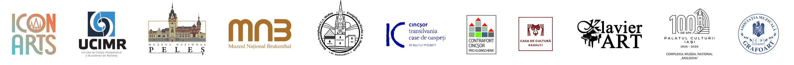
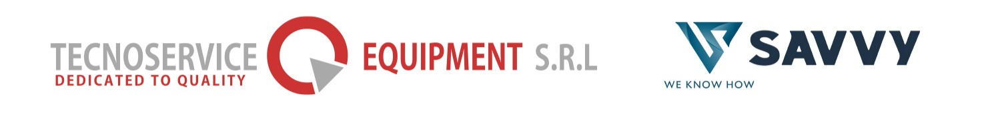
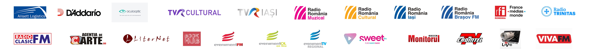

O punte între timpuri
O călătorie muzicală prin spații de patrimoniu, unde anotimpurile au lăsat în ziduri ecouri proprii.
Cum ar fi dacă 4 chitariști ar reimagina și reinterpreta cele 4 Anotimpuri de Vivaldi într-o formulă nouă, neobișnuită? Romanian Guitar Quartet propune publicului o premieră absolută în spațiul muzical românesc, într-un periplu estival prin câteva dintre cele mai frumoase edificii arhitectonice ale țării.
De la repere emblematice precum Castelul Peleș, Palatul Brukenthal sau Palatul Culturii din Iași la locuri mai puțin cunoscute — Bisericile fortificate din Cincșor și Moșna, Sinagoga Mare din Rădăuți sau Cazinoul din Vatra Dornei — călătoria inițiată de cei patru chitariști creează o punte între timpuri, unde culorile calde ale sunetelor freamătă între zidurile străvechi, iar spațiile prind viață în ritmul anotimpurilor.
Demersul Asociației Culturale Kitharalogos îmbină o abordare muzicală inedită cu promovarea și punerea în valoare a unor edificii cu valoare arhitectonică și istorică — atât cele din circuitul turistic, cât și locuri cu mai puțină vizibilitate, care au nevoie de a fi descoperite.
Astfel, pentru patru dintre aceste spații, doi tineri cineaști vor realiza o serie de documentare, iar patru tineri compozitori, selectați în urma unui apel național, dedică o scurtă lucrare pentru cvartet de chitare și bandă fiecăruia dintre ele.
Cele Zece Locuri
Compozitori
Patru lucrări noi pentru cvartet de chitare și bandă, dedicate special celor patru spații din proiect, semnate de tineri compozitori români.
Parteneri și sprijinitori
Organizator
Asociația Culturală KITHARALOGOS
Parteneri
Festivalul și Academia Icon Arts Transilvania · Asociația UCIMR (Uniunea de Creație Interpretativă a Muzicienilor din România) · Muzeul Național Peleș · Muzeul Național Brukenthal · Biserica Evanghelică Sf. Margareta, Mediaș · Asociația Contrafort · Casa de Cultură, Rădăuți · Sinagoga Mare, Rădăuți · Asociația Klavier Art · Centrul Muzeal „Cazinoul Băilor", Vatra Dornei · Complexul Național Muzeal „Moldova", Iași · Asociația Grafoart

Cu sprijinul
Tecnoservice Equipment SRL · Savvy Finance · Ansett Logistics · D'Addario · Oculooptic SRL

Parteneri media
TVR Cultural · TVR Iași · Radio România Muzical · Radio România Cultural · Radio România Iași · Radio România Brașov · RFI România · Radio Trinitas · Radio Clasic · Agenția de Carte.ro · Liternet.ro · BookHub.ro · Eveniment FM Sibiu · Sweet FM · Monitorul de Suceava · Cromtel TV · Radautiziar.ro · Viva FM · România Pozitivă

Finanțator
Administrația Fondului Cultural Național
Proiectul nu reprezintă în mod necesar poziția Administrației Fondului Cultural Național. AFCN nu este responsabilă de conținutul proiectului sau de modul în care rezultatele proiectului pot fi folosite. Acestea sunt în întregime responsabilitatea beneficiarului finanțării.